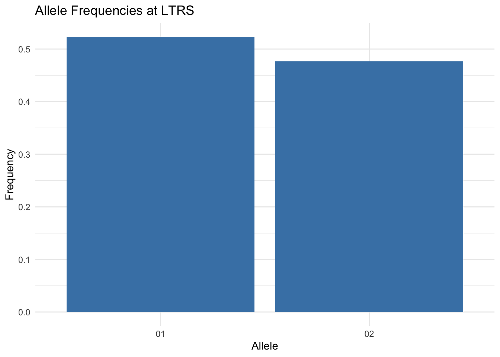
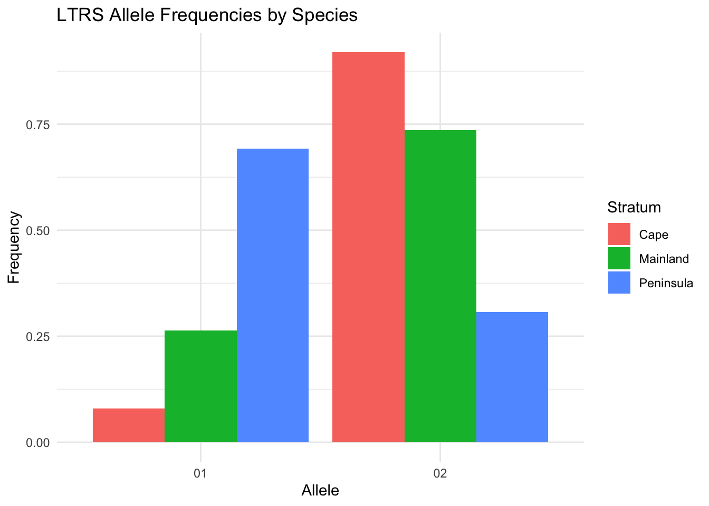
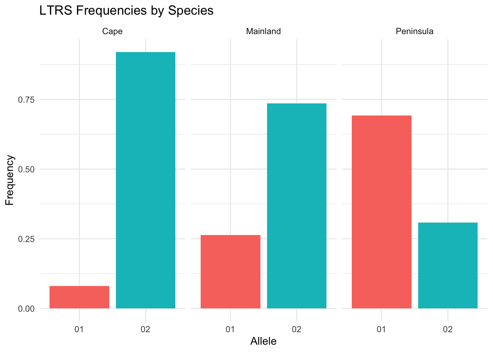
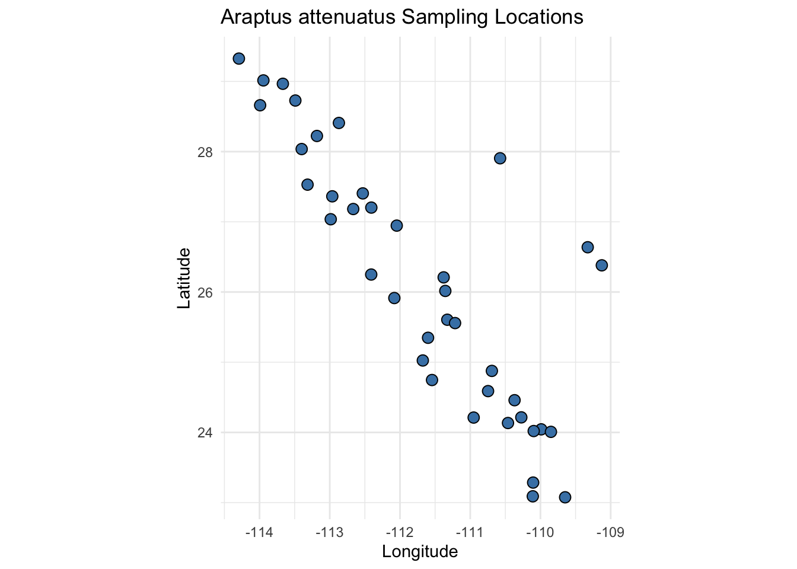
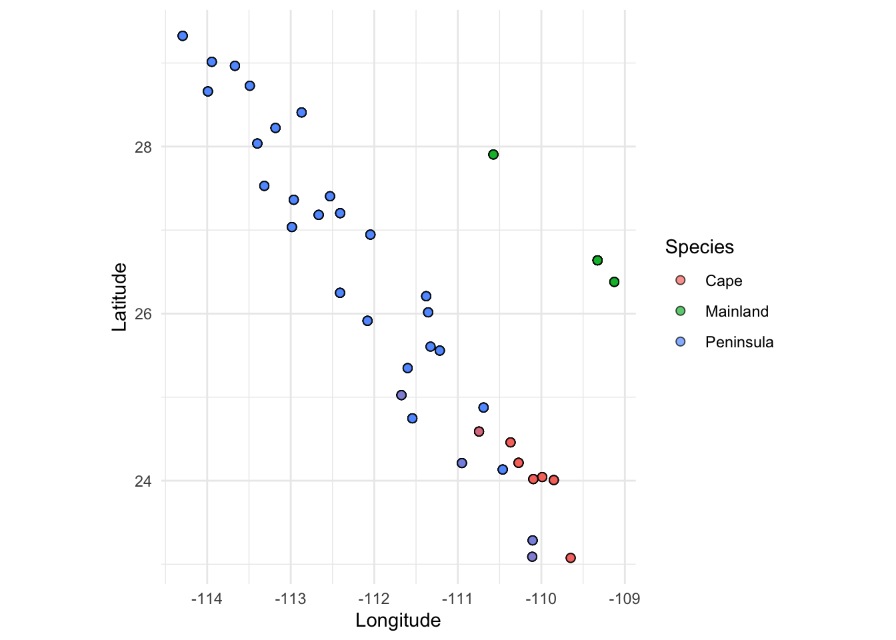
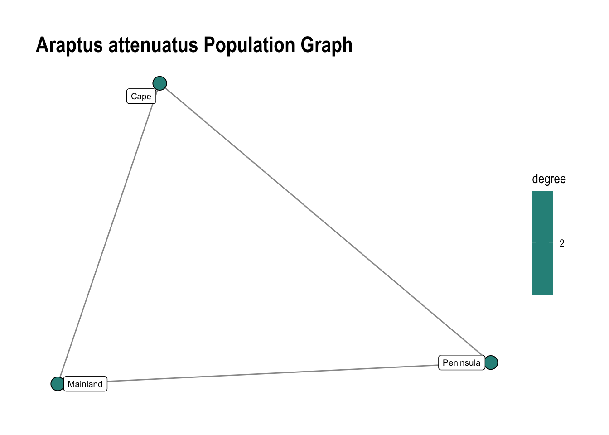
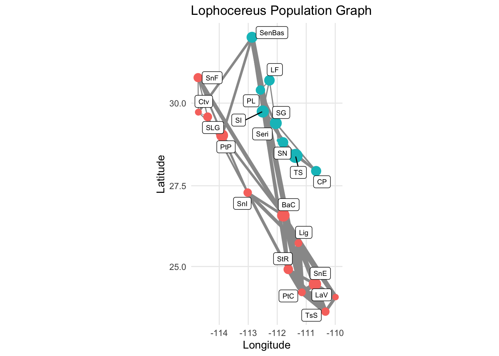
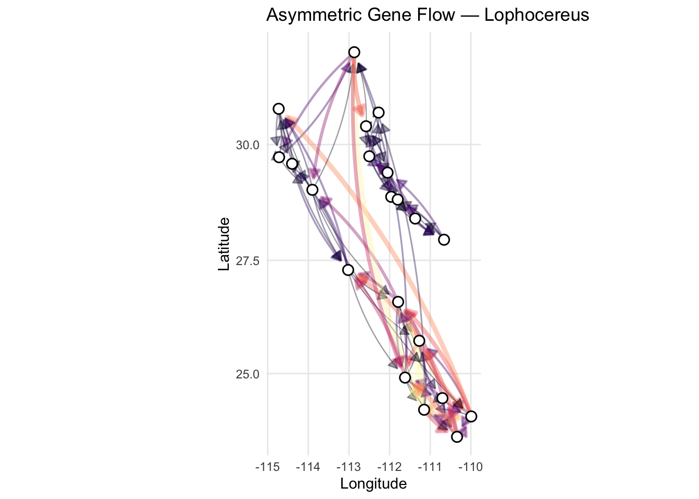

library(gstudio)
library(dplyr)
library(ggplot2)
library(ggraph)
data(arapat)10 Visualization
The gstudio package returns analysis results as standard data.frame objects, which plug directly into ggplot2. This chapter shows the recommended plotting patterns for allele frequency data, population maps, and population graphs.
10.1 Allele Frequency Plots
frequencies() returns a tidy data frame with columns Locus, Allele, and Frequency (plus Stratum when partitioned). Pass it directly to geom_bar().
10.1.1 Single locus
arapat |>
frequencies(loci = "LTRS") |>
ggplot(aes(x = Allele, y = Frequency)) +
geom_bar(stat = "identity", fill = "steelblue") +
labs(title = "Allele Frequencies at LTRS") +
theme_minimal()
10.1.2 Partitioned by stratum
When stratum is supplied, frequencies() zero-fills missing allele/stratum combinations so dodged and faceted plots are correctly aligned. Filter with Frequency > 0 beforehand if you prefer to show only observed alleles.
freqs <- arapat |>
frequencies(loci = "LTRS", stratum = "Species")
freqs |>
ggplot(aes(x = Allele, y = Frequency, fill = Stratum)) +
geom_bar(stat = "identity", position = "dodge") +
labs(title = "LTRS Allele Frequencies by Species") +
theme_minimal()
10.1.3 Faceted across strata
Here the zero-filled alleles are dropped with filter() before plotting:
freqs |>
filter(Frequency > 0) |>
ggplot(aes(x = Allele, y = Frequency, fill = Allele)) +
geom_bar(stat = "identity") +
facet_wrap(~Stratum) +
labs(title = "LTRS Frequencies by Species") +
theme_minimal() +
theme(legend.position = "none")
10.2 Spatial Sampling Maps
strata_coordinates() aggregates individual records to population centroids, returning a data frame with Stratum, Longitude, and Latitude columns ready for geom_point().
coords <- arapat |>
strata_coordinates()
coords |>
ggplot(aes(x = Longitude, y = Latitude)) +
geom_point(size = 3, shape = 21, fill = "steelblue") +
labs(title = "Araptus attenuatus Sampling Locations") +
coord_fixed() +
theme_minimal()
Individual-level data works just as well when you want within-population spread:
arapat |>
ggplot(aes(x = Longitude, y = Latitude, fill = Species)) +
geom_point(size = 2, shape = 21, alpha = 0.7) +
coord_fixed() +
theme_minimal()
10.3 Population Graph Visualization
For a quick look, plot() on a Population Graph returns a ggplot (nodes sized by their size attribute — within-population genetic variability for graphs from popgraph() — or by degree when there is none, and filled by a Region attribute when present; geographic coordinates used when the graph carries them, arrows for directed graphs); see the Population Graphs article for its options. For fully custom figures, use the ggraph package, which extends ggplot2 for graph objects and works natively with popgraph/igraph objects. Install it once with install.packages("ggraph").
10.3.1 Force-Directed Layout
Build a population graph from the arapat dataset and plot it with a Fruchterman-Reingold layout. Node and edge aesthetics map directly to vertex and edge attributes.
graph <- arapat |>
population_graph(stratum = "Species")Warning in popgraph(data, groups, ...): 1 variables are collinear and being
dropped from the discriminant rotation.igraph::V(graph)$degree <- igraph::degree(graph)
graph |>
ggraph(layout = "fr") +
geom_edge_link(color = "grey60", linewidth = 0.5) +
geom_node_point(aes(fill = degree), size = 5, shape = 21) +
geom_node_label(aes(label = name), repel = TRUE, size = 2.5) +
scale_fill_viridis_c() +
theme_graph() +
labs(title = "Araptus attenuatus Population Graph")
10.3.2 Geographic (IBD) Layout
For isolation-by-distance analyses, use layout = "manual" with longitude and latitude pulled from vertex attributes set by decorate_graph(). Add coord_fixed() to preserve geographic proportions.
Use scale_edge_width(range = c(min, max)) to control the rendered line width in mm. Dividing weights inside aes() has no effect because ggraph’s default scale auto-normalises to the data range regardless — the scale absorbs any constant factor. For non-linear transforms (log, normalize), add a pre-computed edge attribute with igraph::E(graph)$attr <- ... before plotting.
data(lopho)
data(baja)
lopho_dec <- lopho |>
decorate_graph(baja, stratum = "Population")
lopho_dec |>
ggraph(layout = "manual",
x = igraph::V(lopho_dec)$Longitude,
y = igraph::V(lopho_dec)$Latitude) +
geom_edge_link(aes(width = weight), color = "grey60", show.legend = FALSE) +
scale_edge_width(range = c(0.3, 2.5), guide = "none") +
geom_node_point(aes(size = size, color = Region), show.legend = FALSE) +
geom_node_label(aes(label = name), repel = TRUE, size = 2.5) +
coord_fixed() +
labs(title = "Lophocereus Population Graph",
x = "Longitude", y = "Latitude") +
theme_minimal() +
coord_map()Coordinate system already present.
ℹ Adding new coordinate system, which will replace the existing one.
10.3.3 Directed (Asymmetric) Graphs
asymmetric_popgraph() produces a directed graph where each undirected edge becomes two directed edges with weights reflecting the net introgression pressure. geom_edge_fan() automatically curves parallel edges so both directions are visible.
lopho_asym <- lopho_dec |>
asymmetric_popgraph()
lopho_asym |>
ggraph(layout = "manual",
x = igraph::V(lopho_asym)$Longitude,
y = igraph::V(lopho_asym)$Latitude) +
geom_edge_fan(aes(color = weight, width = weight),
arrow = arrow(length = unit(2.5, "mm"), type = "closed"),
end_cap = circle(3, "mm"),
show.legend = FALSE) +
scale_edge_width(range = c(0.3, 2), guide = "none") +
scale_edge_color_viridis(option = "magma", alpha = 0.4, guide="none") +
geom_node_point(size = 3, shape = 21, fill = "white", stroke = 0.8) +
coord_fixed() +
labs(title = "Asymmetric Gene Flow — Lophocereus",
x = "Longitude", y = "Latitude") +
theme_minimal() +
coord_map()Coordinate system already present.
ℹ Adding new coordinate system, which will replace the existing one.
10.4 Interactive Leaflet Maps
addAlleleFrequencies() adds allele-frequency pie charts to a leaflet map and follows the standard leaflet pipe pattern. Pre-compute frequencies with frequencies(), build the base map from strata_coordinates(), then pipe into addAlleleFrequencies().
library(leaflet)
library(leaflet.minicharts)
freqs <- arapat |>
frequencies(loci = "LTRS", stratum = "Species")
arapat |>
strata_coordinates(stratum = "Species") |>
leaflet() |>
addTiles() |>
addAlleleFrequencies(freqs)Pass locus = explicitly when freqs contains more than one locus. Width and height of the pie charts (in pixels) are controlled with width = and height =.
10.5 Without Pipes
freqs <- frequencies(arapat, loci = "LTRS", stratum = "Species")
ggplot(freqs, aes(x = Allele, y = Frequency, fill = Stratum)) +
geom_col(position = "dodge")
coords <- strata_coordinates(arapat)
ggplot(coords, aes(x = Longitude, y = Latitude)) +
geom_point()
lopho_dec <- decorate_graph(lopho, baja, stratum = "Population")
ggraph(lopho_dec, layout = "manual",
x = igraph::V(lopho_dec)$Longitude, y = igraph::V(lopho_dec)$Latitude) +
geom_edge_link() +
geom_node_point()